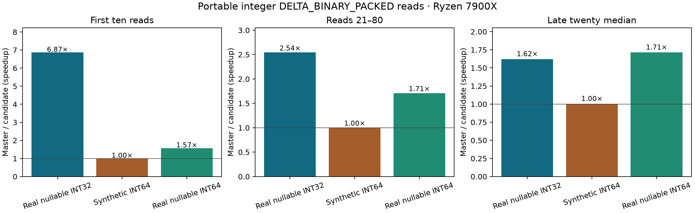

Portable integer delta read expansion
September 29, 2026 · Ryzen 7900X · published Plank public API · AVX2 and AVX-512 disabled · one isolated CPU · 100 ordered ColdStart iterations per case, zero warmups. Exact candidate 2209d94 against master 60c4749.

| Case | First ten total, master → candidate | Middle sixty total | Late twenty median |
|---|---|---|---|
| Real nullable INT32 | 722.2 → 105.2 ms | 1348.8 → 530.5 ms | 14.33 → 8.84 ms |
| Synthetic INT64 | 105.4 → 105.8 ms | 461.7 → 460.3 ms | 7.66 → 7.64 ms |
| Real nullable INT64 | 187.8 → 119.5 ms | 1010.7 → 590.7 ms | 16.83 → 9.83 ms |
The broad INT64 1–64 candidate (94b3781) regressed synthetic INT64: first ten 105.4 → 110.0 ms, middle sixty 461.7 → 484.7 ms, late median 7.66 → 8.06 ms. The accepted INT64 path generates widths 1–16 and keeps the existing decoder for wider widths. All ordered samples, including the rejected screen, are in the JSON download.
DLL size
| Build | Master | INT32-only PR | Expanded PR |
|---|---|---|---|
| Release IL | 752,128 B | 782,848 B | 825,344 B |
| linux-x64 ReadyToRun | 2,555,904 B | 2,590,208 B | 2,636,800 B |
INT32 width matrix · Earlier INT32 direct ARM validation · PR #153